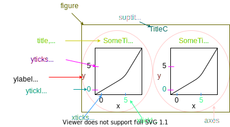

Pyplot matplotlib
Posted on September 2, 2022

1 plt
2 single subplots()
Everytime we need to plot we must reinstantiate object with plt.subplots()
fig, ax = plt.subplots()
ax.plot(...)
plt.show()
fig, ax = plt.subplots()
ax.plot(...)
plt.show()fig, ax = plt.subplots()
ax.set_xlabel("sigma aka Std")
ax.set_ylabel("Prob")
ax.plot(..)
plt.show()3 multiplot subplot
fig,ax = plt.subplots(2,2)
ax[0,0].plot(arr) #top left
ax[0,1].plot(arr) #top right
ax[1,0].plot(arr)
ax[1,1].plot(arr)
fig.show()
painting=plt.imread("painting.png")
plt.imshow(painting)
plt.imshow(painting[:,::-1]) #mirror image in x direction4 subplots quirk - axes can be: non-array, 1D, 2D
axes parameter is usually a 2d array ax[2,3].plot(arr)
When using subplots for (1,1) which is 1 graph, axes parmeter is not an array of subplots but a single plot ax.plot(arr)
fig,ax = plt.subplots(1,1) #this same as line below
#fig,ax = plt.subplots()
ax[0,0].plot(arr) ###WILL RETURN ERROR
ax.plot(arr) ###OK
fig.show()When using subplots where any parameter is (n,1) or (1,n), the axes parameter is a single array. ax[3].plot(arr)
fig,ax = plt.subplots(1,2) #this same as line below
ax[0,0].plot(arr) ###WILL RETURN ERROR
ax[0].plot(arr) ###OK
ax[1].plot(arr)
fig.show()